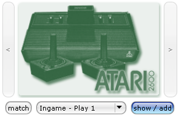
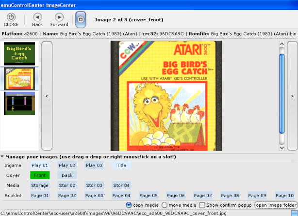
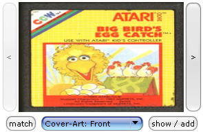
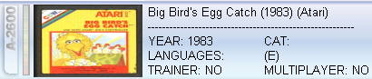

ECC Documentation - Getting started... - Adding
images to a ROM
Adding images to a ROM
- In this example you can see how images are added to a
ROM, this example shows how to add images to a 'Atari 2600' ROM.
1. On the upper-right side of your
screen, press the 'show/add' button (or click on the
image).

-
2. The imageCenter appears,
to add images, just drag 'n' drop them on the named squares
(you can even drag 'n' drop from internet sites!), the
images will be automatically stored in your ecc-user folder!

3.
Click on the 'CLOSE' button, to exit imageCenter.
4. Select the
'Cover-Art: Front' to be shown.-

-
5. As you can see the images
are also displayed in your ROM list (detail list).
-
